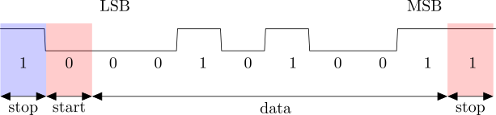

The Universal Asynchronous Receiver Transmitter (UART) has been one of the most widely used data interfaces for decades. In this lab, we will design a UART and use it to communicate between the Basys3 board and a terminal program on your computer.
UART specs for this lab:
The term “baud” refers to the number of symbols per second transmitted on the UART wire. A symbol is a HIGH or LOW signal value. In order to synchronize communication with a single wire, the protocol uses one start symbol (i.e. start bit) to indicate the beginning of a transmission, and one stop symbol (i.e. stop bit to indicate the conclusion of a transmission. In total, ten “symbols” are sent to communicate an 8-bit word, so the effective bit rate is 0.8 × (9600) = 7680 bits/sec. The pulse width (i.e. duration) of each symbol is 1/9600 seconds, or 104.17us.
We want to design a UART that can be reused in future designs. To make a reusable design, we should plan for how the UART will interact with its application:
The receiving device expects to receive signals formatted like the timing diagram shown below. When the bus wire is idle, it should have a HIGH value. The start condition is when the signal drops from HIGH to LOW.

After the start event, the signal should stay LOW for the duration of one bit. At 9600 baud, the duration is 1/9600 s. Then the data is sent one bit at a time, starting with the LSB. After all eight bits have been sent, a stop bit (logic HIGH) is transmitted, returning the wire to its idle HIGH level. After the stop bit, the UART can immediately follow with another start condition and data frame, or it can hold the line HIGH in an idle condition until it needs to transmit again.
Based on the provided state diagram, implement a module named uart_tx with the following specifications:
start, clk, and rst_l (all 1-bit)d_out (8-bit)done and tx (both 1-bit)rst_l initializes the module in an IDLE or WAIT statetx to the Basys3 board’s UART tx pin.The transmit operation can be reduced to three states in a high-level machine:

Once your UART is verified, create a new Design Source to implement a top module:
module top(
input clk,
input rst,
output tx,
input send
);
reg [7:0] message[4:0]; // Message to transmit (an array of bytes)
reg [7:0] d_out; // UART transmit data (one byte)
reg [31:0] msg_count; // Array index of the message byte
reg start; // Handshake start signal to send one byte
wire done; // Handshake done signal indicating transmit complete
wire rst_l; // Active-low reset signal
assign rst_l = ~rst;
uart_tx UART1(
.clk(clk),
.d_out(d_out),
.start(start),
.rst_l(rst_l),
.done(done),
.tx(tx)
);Define the top-level behavior. The first if condition initializes the signals. In this example, the message is the string “hello”, which contains five letters. The assignments below use the 8-bit ASCII value for each letter.
always @(posedge clk, negedge rst_l) begin
if (~rst_l) begin
msg_count <= 0;
message[0] <= "h";
message[1] <= "e";
message[2] <= "l";
message[3] <= "l";
message[4] <= "o";
start <= 0;
d_out <= "h";
endNext define a process to implement the handshaking and send out the message bytes one-by-one:
else begin
if (send && (!start) && (!done)) begin
start <= 1;
d_out <= message[msg_count];
end
else if (start && done) begin
// De-bounce the send button at end of message:
if ((msg_count == 4)&&(~send)) begin
msg_count <= 0;
start <= 0;
end
// Increment the byte index until reaching the end
else if (msg_count < 4) begin
msg_count <= msg_count + 1;
start <= 0;
end
end
end
end
endmoduleA testbench module is provided in src/testbench.v. For this assignment, the testbench is designed a little differently. Since the UART transmission requires precise timing, the testbench uses # delay statements to specify timed events with nano-second precision. These statements are all placed in the initial block, indicating that the simulator should start processing the pattern starting from time 0, with timing controlled by the indicated # delays.
// -----------------------------------------------------
// CREATE STIMULI AND REPORT RESULTS
// -----------------------------------------------------
integer i;
integer tx_count;
reg [7:0] d_in;
initial begin
rst = 1; // start up in reset condition
tx_count = 0;
// After 100ns, stop resetting
#100 rst = 0;
// Delay 1000ns, then "send"
#1000 send = 1;
while (1) begin
// Wait for a signal:
while (tx) begin
// Delay 10us between checks
#10000;
end
$write("Start bit. TX=");
$fwrite(fid,"Start bit. TX=");
// Get eight bits:
for (i=0; i<8; i=i+1) begin
#104170;
d_in[i] = tx;
$write("%b",tx);
$fwrite(fid,"%b",tx);
end
// Wait for stop bit:
#104170;
if (tx) begin
$write(". Stop bit. ");
$fwrite(fid,". Stop bit. ");
end
else begin
$write(". BAD STOP BIT. ");
$fwrite(fid,". BAD STOP BIT. ");
end
$write("Got %xh('%c')\n",d_in,d_in);
$fwrite(fid,"Got %xh ('%c')\n",d_in,d_in);
tx_count = tx_count + 1;
end
end
// -------------------------------------------------------Run make to simulate the design. If your UART is correct, you should see this output:
Start bit. TX=00010110. Stop bit.Got 68h('h')
Start bit. TX=10100110. Stop bit.Got 65h('e')
Start bit. TX=00110110. Stop bit.Got 6ch('l')
Start bit. TX=00110110. Stop bit.Got 6ch('l')
Start bit. TX=11110110. Stop bit.Got 6fh('o')If you don’t see this exact pattern, you will need to debug your design. For debugging, you may want to review the “Fishbone (Ishikawa) Diagram” method described in the SPI_READ_WRITE assignment. You should also run make gui or use gtkwave to analyze the signal timing.
Some things that are likely to go wrong include the following:
testbench. Could be caused by incorrect port connections, incorrect handshaking, a bad clock divider, or a bad state machine. You’ll want to check start, the UART clock, and the UART state.tx assignment statement. Also check the d_out declarations in top and UART_tx, and make sure they have 8 bits. Check the port connections where UART_tx is instantiated. Also check your clock divider timing; if your baud rate is way too slow then testbench will think it sees all zeros, and will report a BAD STOP BIT for each byte.STOP state.This list is not exhaustive by any means, but represents the problems most often encountered in past runs of this class.
Create an XDC file based on Basys3_Master.xdc. Map one of the buttons to the rst input, and another button to the send input.
Map tx to the USB-RS232 tx pin (search the constraint file for “USB-RS232” to find the correct lines).
Next run make implement to generate a bitstream.
On Linux systems, the femtocom program should be installed in /usr/local/bin. If not, download the script from the Canvas page.
Now open a Terminal on your computer and run these commands:
ls /dev/ttyUSB*You should see one device. Usually it is ttyUSB0 or ttyUSB1 (if the Vivado Hardware Manager is not running, you may see two devices, it’s usually the higher numbered device). If the device is /dev/ttyUSB0, then you would run:
./femtocom /dev/ttyUSB0Then press the send button on your Basys3 board. You should see “hello” appear in your terminal.
On Windows computers, the PuTTY terminal program is widely used for serial communication. After installing PuTTY, launch it and you will see a dialog window like the one on the right side of the image below. Find the “serial” radio button and click it (see highlight in the picture). Then you need to specify the COM port. To find the correct port number, open the Device Manager by typing it into the Windows search bar. You should be able to find the COM port list, as shown on the left side of the image below.

Verify the session type, COM port, and baud (9600), then click Open to start the session. Press the button on your Basys3 (assuming it’s programmed with the uart_tx bitstream), and you should see your message appear in the terminal:
Record a short video starting with the blank terminal window, then showing you press the “send” button, then showing the “hello” message in the terminal. Upload the video on Canvas.
Turn in your work using git:
git add src/*.v *.v *.rpt *.txt *.tcl *.bit *.xdc
git commit . -m "Complete"
git push origin masterIndicate on Canvas that your assignment is done.